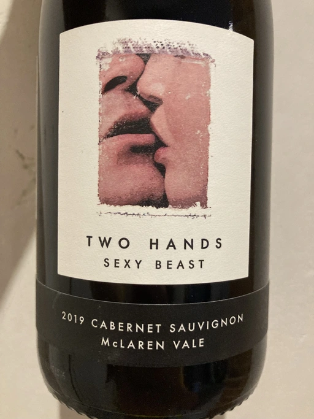

- Type
- Red Still, Dry
- Producer
- Two Hands
- Vintage
- 2019
- Location
- Australia, McLaren Vale
- Grapes
- Cabernet Sauvignon
- Alcohol
- 14.1
- Sugar
- 0.73
- Price
- 730 UAH, 664 UAH
- Cellar
- N/A
Ratings
2021-11-13 - 7.50
Well yes, it’s an absolute blockbuster, but kind of in a good way. Nice nose featuring plums, graphite, spices, medicinal herbs with hints of menthol. Almost full-bodied, well structured and balanced wine with the right volume. Still very young with fruit-forward profile and long aftertaste. Potential? Few years for sure, but already a pleasure to drink it now.
2022-05-08 - 7.50
Nothing really changed since my last tasting of this wine. Licorice root, plums, menthol and spices. Still young, fruit-forward profile yet velvety with good balance and long aftertaste. Hard to drink solo, pairs well with meat snacks.